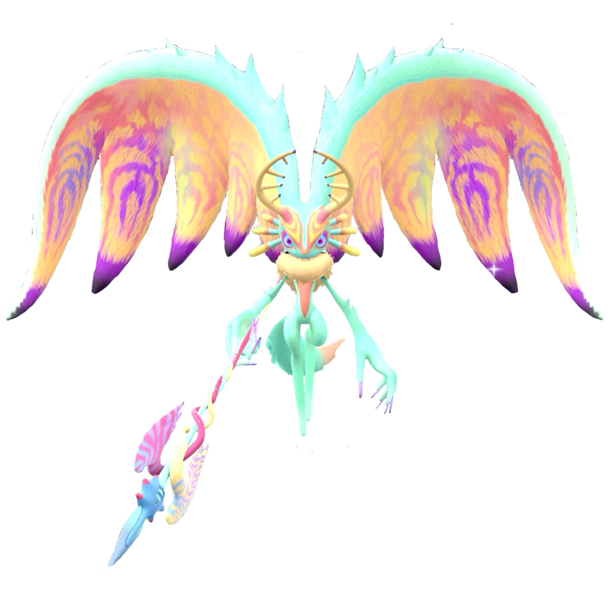
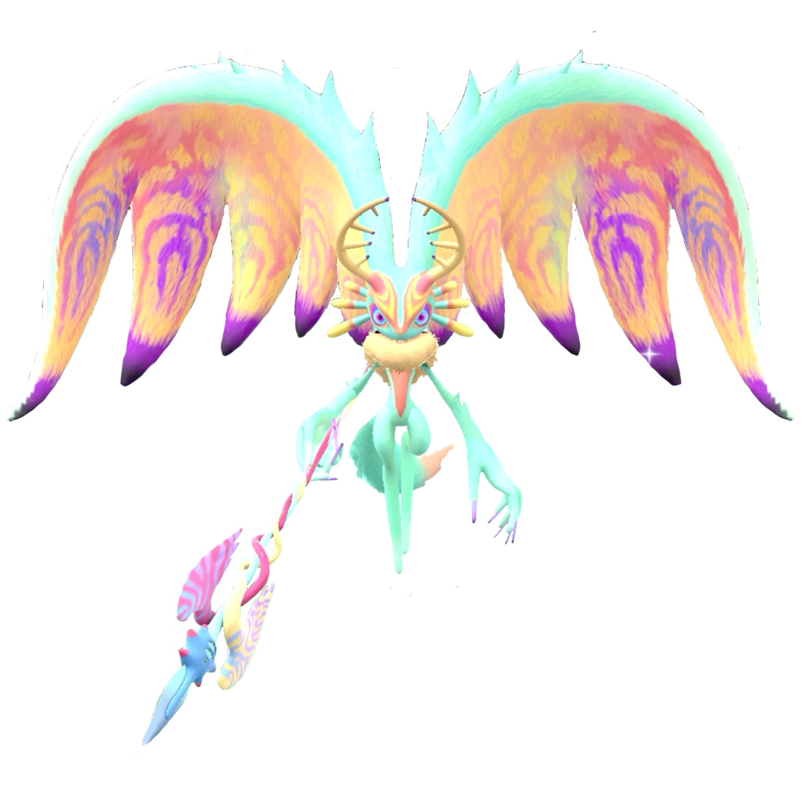

Fecto Elfilis is the antagonist of the newest game in the series, and specifically, they are the combination of an antagonistic life form known as Fecto Folio, and a character who has been Kirby's friend throughout the game, known as Elfilin. The entire game takes place in a world that has previously been abandoned, a mesa filled desert full of ocean windmills and old container ships, abandoned moss covered cities and malls, and a lava overrun factory and industrial area all make up areas Kirby visits on their journey.
Elfilin used to be simply a part of fecto folio when the creature arrived at this strange world, and caused havoc before it was captured by the inhabitants of that world, inhabitants that are now all mysteriously gone. By the end of the game, we learn that, after capturing this creature, the inhabitants left via some form of teleportation or “Warp” leaving the world they built up behind to be inhabited by the animals that live there. Eflinin had split off from fecto just before the creature was captured, and because of this, the lifeform went dormant and elfilin explored and was a part of this newly empty world as its own being.
The end of the game however, has Elfilin captured by other antagonists, the beast pack, who are attempting to reunite Elfilin and fecto in order to gain whatever had been gained from the lifeform by the people who left the world. As the two become one, you experience a few forms of the creature, resulting in Fecto elfilis, who you end up fighting as a boss. But through kirby’s efforts, they manage to free Elfilin from the creature, which then leads to the creature, who up until this point has also been known as the ultimate life form and the ultimate invasive species, literally try to tear apart space and time in order to defeat the Kirby and Elfilin.
Outside of the actual contents of the game's story, Fecto Elfilis represents two major things, reflecting how they are two beings in one. They represent how invasive ideas and creatures can harm an environment, offsetting the balance and equilibrium of something until it goes down a path that only leads to its own harm. This is shown through the beast pack who are tricked into helping the being through the promises of power while not being able to fully understand what they're dealing with.
At the same time, through their defeat, Fecto Elfilis represents growth, and being your own person despite where you came from. It represents not letting your history, as bad as it may be, define you. Elfilin, even though referred to as a missing piece of Fecto as a whole by a number of characters, stands out as their own person, able to make their own decisions and do the right thing in spite of their past. They, with the support of Kirby, not only help right what wrong was done by where they came from, they also stand up for themselves as who they've grown into, not allowing their past to overcome them, no matter how overpowering it might be.